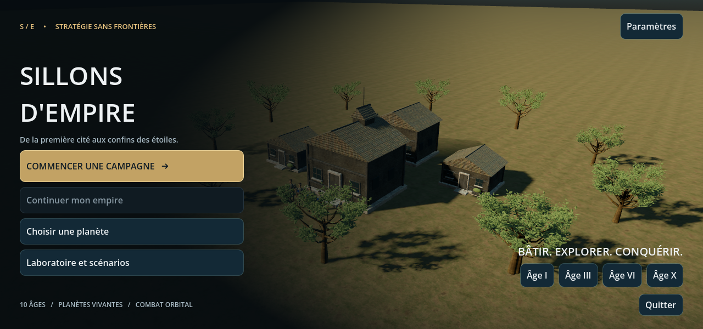
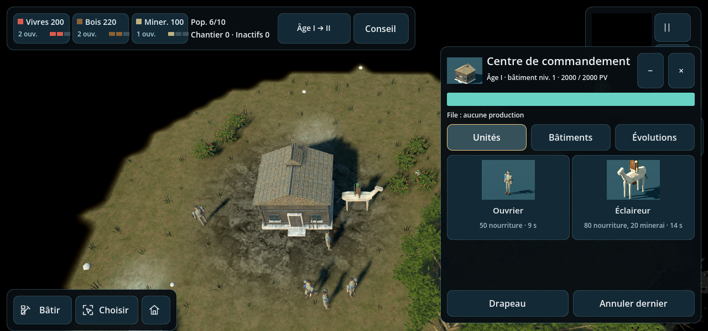
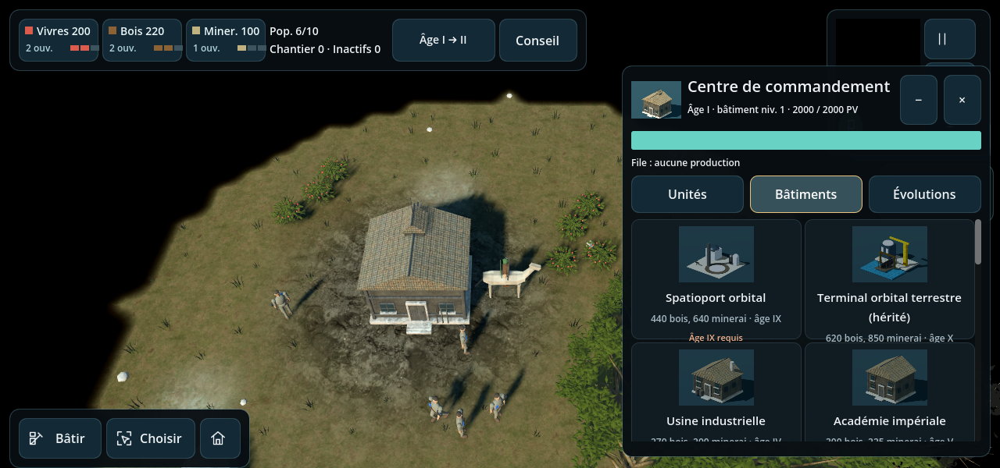
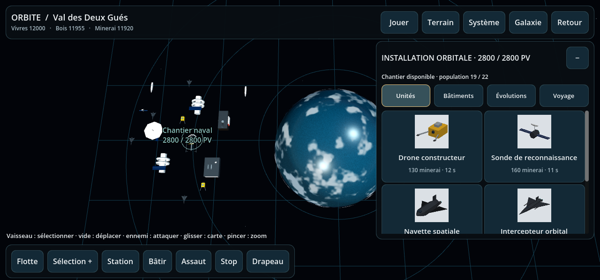
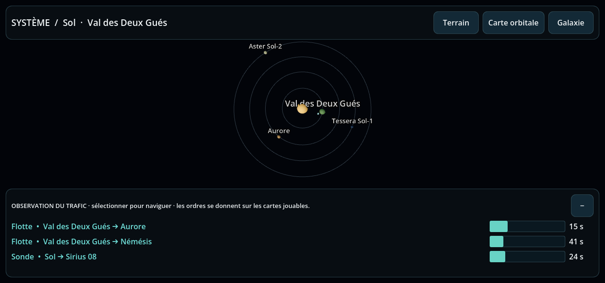
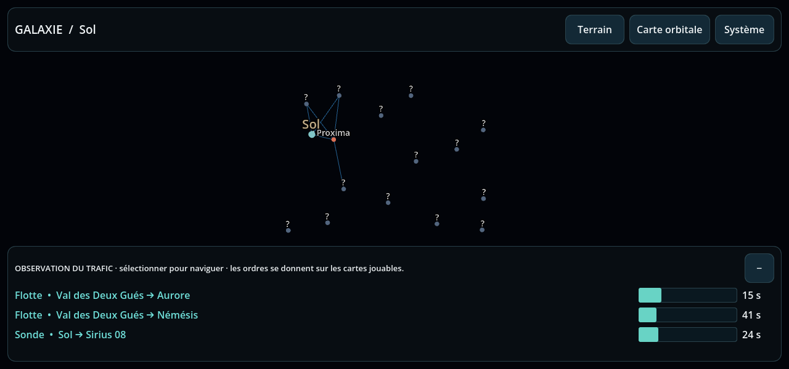

PROJET COMPLET · 0.15.0 CANDIDATEDes actions locales, une vue claire de l’empire.
Captures du jeu dans Godot 4.7.2, OpenGL logiciel sur Linux. Le terrain et l’orbite sont jouables ; système et galaxie affichent le trafic. Les âges avancés ci-dessous sont des fixtures de contrôle.
Accueil 3D
Fiche de bâtiment · unités
Fiche de bâtiment · constructions
Carte orbitale jouable
Suivi du système
Suivi de la galaxie
Projet source ; APK et performances Android non validés.